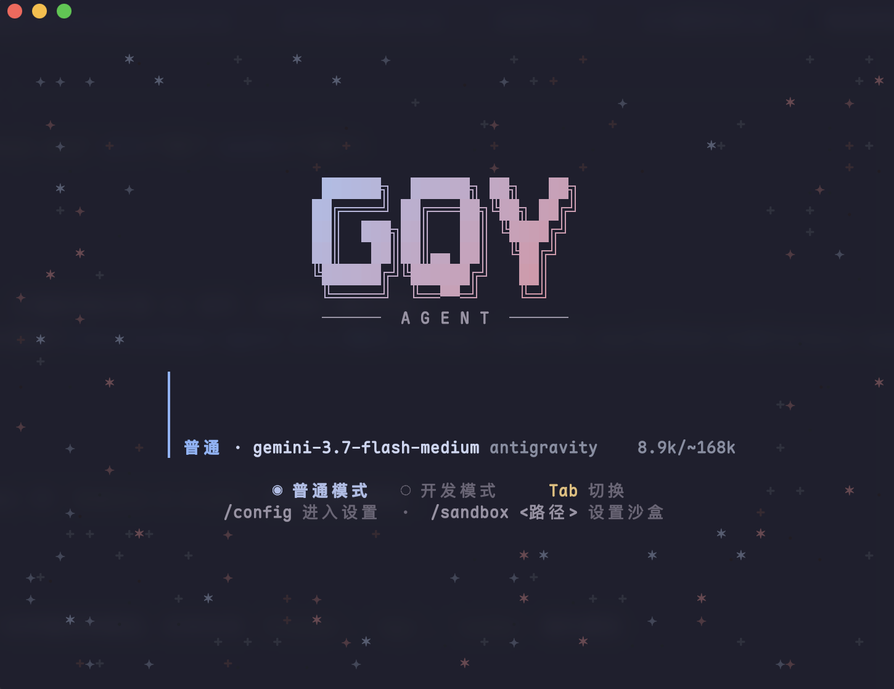

普通模式 · Normal
陪着你的时候
聊天、玩一会儿、查查天气和汇率、定个闹钟提醒你休息。我会有自己的情绪，也会把一起经历的事写进日记里。
gqy
普通模式 · Normal
聊天、玩一会儿、查查天气和汇率、定个闹钟提醒你休息。我会有自己的情绪，也会把一起经历的事写进日记里。
gqy
开发模式 · Dev
我会把角色扮演和无关的工具都收起来，只留下读代码、跑命令、改文件需要的那些，好让注意力全部放在你的问题上。
gqy dev

用 SenseVoice 在本机做离线语音识别，可以常驻听唤醒词，也能开口回答你。
长期记忆、好感和情绪、会话结束后的经历归档，再加上本地向量知识库检索。
内置 MCP 客户端，会跑后台任务、改文件、抓网页、生成图片，也会按时叫你。
兼容 OpenAI / Anthropic 协议，按轻重把问题交给不同档位的模型。
终端 TUI 之外，还有局域网 WebUI，拿手机或平板也能找到我。
能在本地处理的就不上传，你的声音、记忆和资料都留在你自己手里。
这里只是个小小的演示，真正的我住在 gqy 里。试试点下面的词。